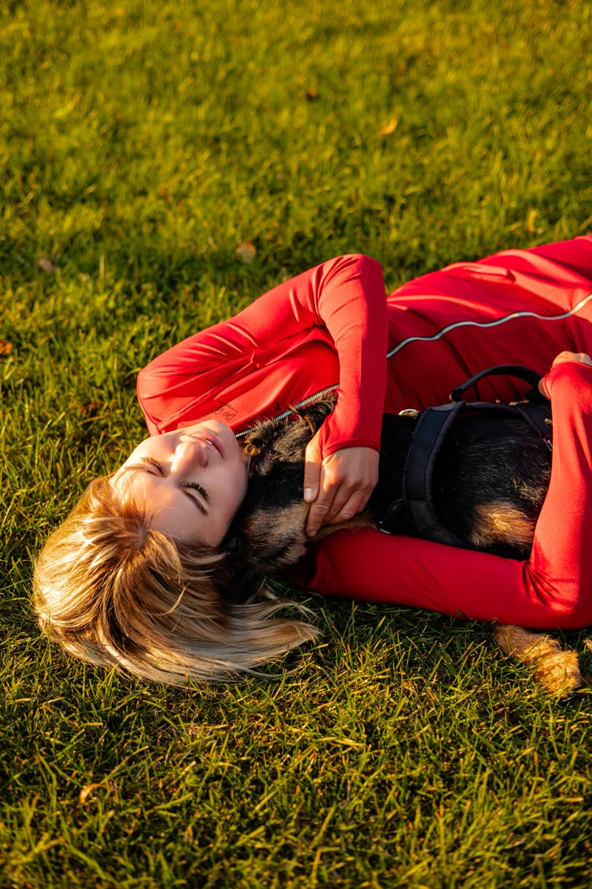

Нюхання дуже ефективно переключає собаку з подразника й розслабляє. У кінці уроку — алгоритм, який варто зберегти.

Наталка Виноградськакінологиня · 7 років досвіду, 2000+ клієнтів
Ви вже знаєтеЩо робити в моменті переляку і дві рухливі вправи: YES та рух по колу з YES.
Вправа 3 · нюх
«Шукай»
Що робимо
Піднесіть їжу собаці під ніс, скажіть «шукай» і киньте жменю їжі на землю.
Для чого
Нюхання дуже ефективно переключає собаку з подразника й розслабляє.
Як тренувати
Тренуйте спершу в спокійних умовах без подразників.
Запишіть звук, який лякає, на диктофон і вмикайте на мінімальній гучності. Або відійдіть від подразника на таку відстань, на якій собака ще не нервує.
Є звук — одразу «шукай».
Поступово підвищуйте гучність або скорочуйте відстань.
Так тренуйте 2–3 тижні.
Потім пробуйте в реальних ситуаціях, спершу відійшовши на безпечну відстань.
На відео: їжу під ніс, «шукай» і жменя їжі на землю. Собака винюхує й переключається.
Приклад
Ось як виглядає робота в реальній ситуації
Зверніть увагу на реакцію собаки на доторки: щойно ми помітили, що собаці неприємно (вона відскочила), власниця припинила її торкатися.
Збережіть собі
Алгоритм при переляку
На короткому повідку без зупинок відійдіть від небезпечного звуку
Зробіть одну з рухливих вправ
Зробіть «Шукай»
Усі собаки різні.
Пробуйте всі три вправи й дивіться, що найкраще працює саме для вашої собаки. Головне — тренувати спершу в спокійних умовах і лише потім у реальних ситуаціях.